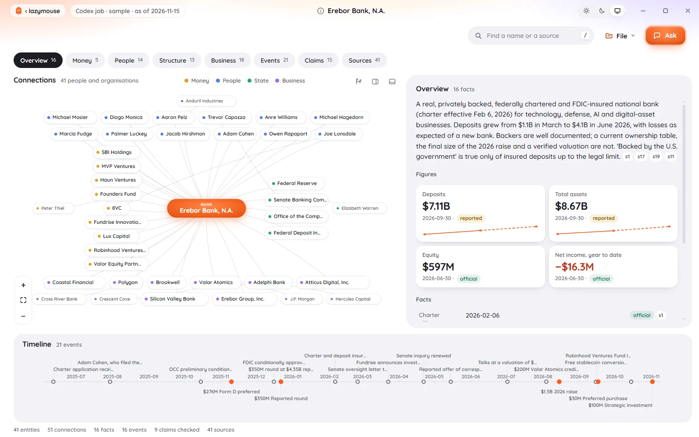
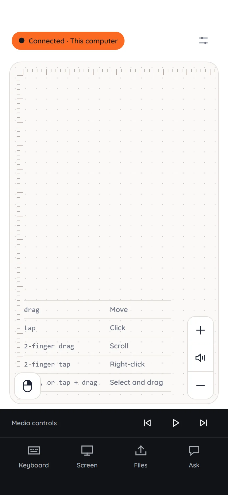

Ask your computer anything.A little help. A lot more possible.
An assistant that understands your screen, turns questions into research, and gets to work on your computer.

The overview: people, organisations and events, connected to the evidence.
Deep search.Go beyond the answer.
Research a company, a person, a market or an idea. LazyMouse turns what it finds into a connected workspace you can explore, question and build on.
Follow the evidence. People, organisations, funding and events, connected to the sources behind them.
Keep going. In the app, expand a lead, merge investigations, and return to any step in your history.
Keep the work. Your map, notes and layout stay together. Export the research when you need it.
Ask what's on your screen.The ghost points.
Say “what am I looking at?” It explains it part by part, and the ghost flies to each part as it speaks: an app, a chart, a page, the PDF you have open. Circle something with Ctrl Alt to ask about only that.
The ghost follows each part of the explanation. Replay to watch the screen tour.
It lives at the edge of your screen.Hold a key, and talk.
Keep your notes close. Hold Ctrl Alt in any app and just talk: no window to find, nothing in your way.
Your workspace
Project notesA clearer picture.
A clearer picture.
A little more room to think.
Your work stays in front. The assistant stays within reach.
An idea for later
Follow the interesting bits.
Ask a better question.
Ask a better question.
- Notes that stay closeOpen a note to read it. Tick a task as you finish it, then get back to your work.
- Circle to askHold Ctrl Alt and move the mouse to draw a loop round anything on your screen, then ask about only that.
- Out of your wayYour notes stay where you put them. The assistant is ready whenever you need a little help.
Hand off a job.Then leave.
Bigger work goes to a background job, run by Claude Code or Codex signed in with your own account. A small ghost in the corner shows what it is doing, and your phone tells you when it is done.
Jobs
Your computer works.
Your phone can leave.
Your AI helpers are connected
Research our competitors
Reading the market, comparing products and collecting the sources.
Select a task to preview its progress. Sample jobs shown.
Research our competitorsWriting the report
The same working ghost.
A different motion for each kind of work.
Your computer.From anywhere.
Across the room or away from home. Your paired phone becomes the trackpad, keyboard and screen for your computer. Wi-Fi nearby; an encrypted relay connection when you’re away.

Drag here
Project workspaceStill your desk.
Still your desk.
Even when you’re away.
Drag on the phone to move the ghost.
Pair once with the computer. Reconnect from your phone. No separate phone account.
Ask your computer anything.
See where it takes you.
LazyMouse is in an invite-only beta. Join the wishlist, and we’ll email you an invite. Free while you test, the assistant included.